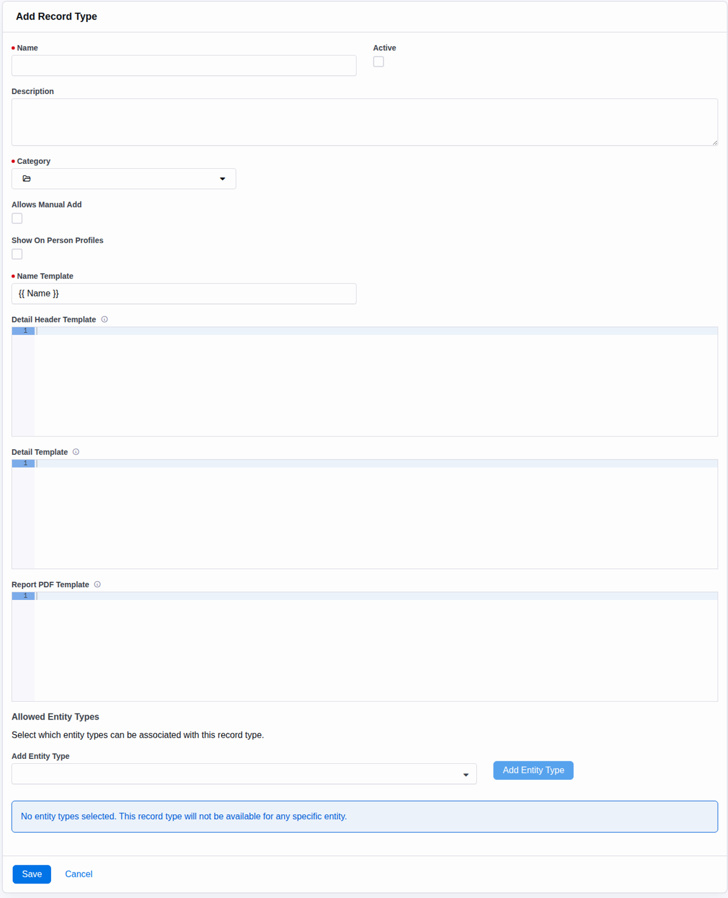

Setup
Configuration
Start in Admin Tools → Installed Plugins → Records. A record type defines what a record stores, where it can appear, and how it is presented.
Create a Record Type

| Field | What It Controls |
|---|---|
| Name and Description | Administrator-facing identity and explanatory text for the record type. |
| Active | Whether the type is available in active type queries and picker trees. |
| Category | Where the type appears in the Records category tree. |
| Allows Manual Add | Records the type’s manual-entry preference for user-facing experiences. |
| Show On Person Profiles | Makes the type eligible for the person-profile Records surface. |
| Name Template | Lava used to generate a record name when automation does not provide one. |
| Detail Header Template | Lava rendered above the record detail content. |
| Detail Template | Lava replacement for the standard detail presentation. |
| Report PDF Template | Lava transformed into an on-demand Letter-size PDF. |
| Allowed Entity Types | Rock entity types that records of this type may be associated with. |
Add Record Attributes
Rock Records uses Rock’s Attribute system for type-specific fields. Record attributes are qualified to one record type, so two types can have different schemas without adding columns to the plugin tables.
- Save the record type so it has an identifier.
- Add attributes for the information each record should hold.
- Mark attributes as grid columns when staff should see or filter them in Record List.
- Set field-type qualifiers and attribute security just as you would for other Rock entities.
Filter support: grid attributes using Defined Value, Campus, or Single Select field types receive option-based filters in Record List. Other attribute types can still be displayed as grid columns.
Choose Allowed Entity Types
Entity type mappings define the contexts in which a record type is relevant. For example, a type mapped to Person can be associated with a person; a type mapped to Group can be associated with a group. A record may have multiple associations.
- Choose only the entity types the record type actually supports.
- Enable Show On Person Profiles only for types intended for person context.
- Use the context-aware Record List block on entity detail pages to show only allowed, authorized types.
Plan Security Before Data
Record types and records are secured entities. List blocks and picker APIs call Rock authorization checks for the current person before returning or changing data.
| Permission | Effect |
|---|---|
| View | Controls whether a type or record appears in lists, detail views, and authenticated picker trees. |
| Edit | Controls add, edit, and delete actions in the Obsidian blocks. |
| Administrate | Controls access to security administration for a record type. |
Test every configured surface as a representative non-administrator. Administrator access does not prove that the intended staff role can see the same record type, record, or picker value.
Configuration Checklist
- Name, description, category, and active state are correct.
- Record attributes have the right field types, qualifiers, grid flags, and security.
- Allowed entity types match the association design.
- Person-profile display is enabled only when intended.
- Name, detail, header, and report templates render with a safe sample record.
- View and Edit permissions work for both administrators and target staff roles.